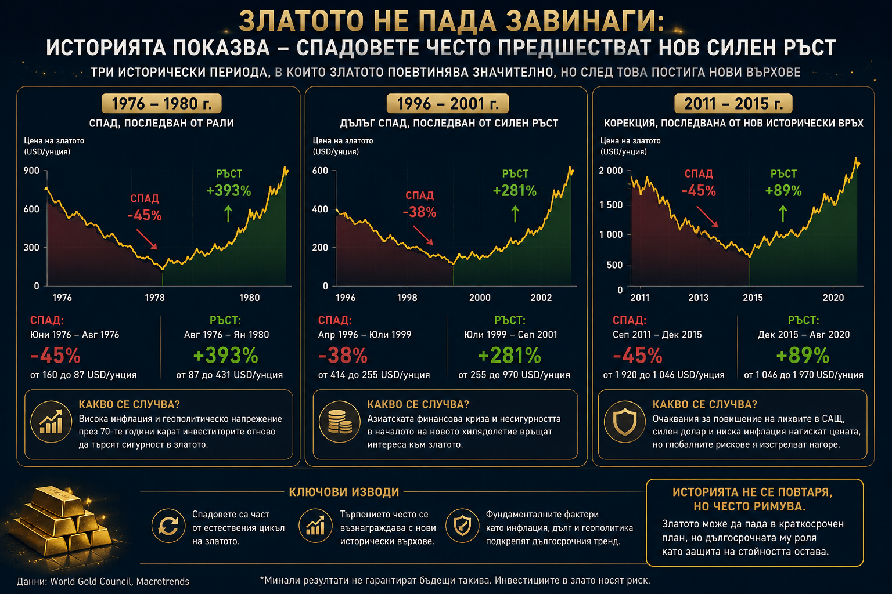

Защо златото падна по време на война?
През по-голямата част от съвременната финансова история инвеститорите са възприемали златото като най-естественото убежище в моменти на кризи. Когато избухват войни, финансовите пазари се разклащат, инфлацията се ускорява или доверието към валутите започне да отслабва, първата реакция почти винаги е една и съща – капиталът се насочва към благородния метал. Именно затова случващото се през последните месеци изглежда толкова необичайно. Военният конфликт в Близкия изток се задълбочава, петролът поскъпва, геополитическата несигурност остава висока, а въпреки това златото не само не продължава нагоре, а влиза в мечи пазар и губи повече от една пета от стойността си спрямо историческия връх.
На пръв поглед това изглежда като пълен парадокс. Как е възможно актив, който десетилетия наред е определян като „убежище във времена на страх“, да поевтинява именно когато светът изглежда по-несигурен? Отговорът е едновременно прост и изключително важен за всеки инвеститор. Финансовите пазари почти никога не реагират на едно събитие. Те реагират на онова, което има най-голямо значение за бъдещите парични потоци, доходността и цената на капитала. В настоящия цикъл това не е войната. Това са лихвените проценти.
Златото не реагира на войната, а на последиците ѝ
Тук много инвеститори допускат една от най-честите грешки – разглеждат златото като актив, който автоматично печели от всяка криза. Историята показва, че подобно правило никога не е съществувало. Златото не реагира на самата война, а на икономическите последици от нея. Ако кризата принуди централните банки да намалят лихвените проценти и да инжектират ликвидност, металът почти винаги започва силен възходящ цикъл. Ако обаче същата криза доведе до по-висока инфлация, която принуди централните банки да задържат високи или дори да повишат лихвите, ситуацията може да бъде точно обратната. Именно това наблюдаваме днес.
След покачването на цените на петрола над 100 долара за барел пазарите започнаха да преоценяват цялата си представа за паричната политика. Само преди няколко месеца инвеститорите очакваха Федералният резерв да предприеме няколко понижения на лихвените проценти през годината. Днес тази картина изглежда коренно различна. Все повече анализатори допускат, че лихвите ще останат високи значително по-дълго, а част от пазара дори започна да дискутира вероятността от ново увеличение, ако инфлацията продължи да се ускорява. Именно тази промяна има много по-голямо значение за цената на златото, отколкото самите военни действия.
Алтернативната цена: защо лихвите тежат на златото
Причината е фундаментална. За разлика от акциите, облигациите или банковите депозити, златото не носи доходност. То не изплаща дивидент, не генерира купон и не произвежда паричен поток. Единствената причина инвеститорът да притежава злато е очакването неговата цена да се повиши или да запази покупателната си способност във времена на икономически сътресения. Именно тук се появява понятието „алтернативна цена“ или opportunity cost – една от най-важните концепции във финансите.
Представете си двама инвеститори. Първият държи един милион долара в злато. Вторият инвестира същата сума в десетгодишни американски държавни облигации с доходност от 5%. След една година вторият инвеститор ще получи приблизително 50 000 долара доход, без да продава актива си. Първият няма да получи нищо. За да компенсира тази разлика, цената на златото трябва да се покачи поне с приблизително същия размер. Колкото по-високи стават лихвите, толкова по-скъпо става притежаването на актив без доходност. Именно затова повишаването на реалните лихви почти винаги оказва натиск върху цената на благородния метал.
Уроците на Волкер и на 2020-а
Историята потвърждава тази зависимост многократно. В началото на 80-те години председателят на Федералния резерв Пол Волкър предприема една от най-агресивните кампании за повишаване на лихвените проценти в историята на Съединените щати. Основната цел е овладяването на двуцифрената инфлация, която разяжда американската икономика. Резултатът е впечатляващ. Инфлацията постепенно е поставена под контрол, но цената на златото навлиза в продължителен мечи пазар. Не защото светът внезапно е станал по-сигурен, а защото доходността по безрисковите активи става достатъчно висока, за да намали привлекателността на метала.
Обратният пример е кризата след пандемията през 2020 година. Тогава Федералният резерв намали лихвените проценти практически до нула, а реалните лихви дори станаха отрицателни. Инвеститорите започнаха да губят покупателна способност, държейки пари в кеш или облигации. Именно тогава златото достигна нови исторически върхове. Това не беше просто реакция на пандемията. Това беше реакция на почти безплатните пари.
Доларът: вторият голям фактор
Днес ситуацията е диаметрално противоположна. Реалните лихви остават положителни, доходността по американските облигации отново достига нива, които не сме виждали от години, а доларът се засилва. Това създава двоен натиск върху златото. От една страна, инвеститорите получават все по-висока доходност от облигациите. От друга, силният долар прави благородния метал по-скъп за купувачите извън Съединените щати и традиционно ограничава международното търсене.
Именно доларът представлява вторият голям фактор, който често остава извън вниманието на масовите инвеститори. Почти всички суровини по света се търгуват в американска валута. Когато доларът поскъпва, купувачите в Европа, Азия или Латинска Америка трябва да платят повече в собствените си валути за същото количество злато. Това естествено ограничава част от търсенето. Историческите зависимости показват, че силният долар почти винаги създава неблагоприятна среда за благородните метали.
Ликвидността: защо златото пада в паника
Но има и трети механизъм, който действа почти незабелязано – ликвидността. Когато финансовите пазари навлязат в период на силен стрес, инвеститорите невинаги продават най-слабите си активи. Те продават най-ликвидните. Именно затова през март 2020 година, в разгара на пандемичната паника, златото също поевтиня с повече от 10%, въпреки че целият свят търсеше сигурност. Причината беше проста – институционалните инвеститори имаха нужда от кеш, за да покриват марджин изисквания, да намалят риска или просто да увеличат свободната си ликвидност. Златото беше един от малкото активи, които можеха да бъдат продадени незабавно.
Подобен процес наблюдаваме и днес. След силното си поскъпване през последните години благородният метал остава една от най-печелившите позиции в много институционални портфейли. Когато инвеститорите започнат да намаляват риска, логично е първо да реализират печалби именно там, където такива вече съществуват. Това не означава, че фундаменталната история около златото се е променила. Означава единствено, че краткосрочните нужди от ликвидност могат временно да доминират над дългосрочната инвестиционна логика.
Интересното е, че подобни движения далеч не са безпрецедентни. През 1976 година златото загуби близо половината от стойността си само за една година. Много анализатори тогава обявиха края на големия бичи пазар. Само четири години по-късно цената беше нараснала със стотици проценти. След кризата от 2008 година историята се повтори. Първоначалният спад беше последван от едно от най-силните възходящи движения в историята на благородния метал. Общото между двата периода не беше самата криза. Общото беше промяната в паричната политика.

Истинският въпрос: какво ще направят централните банки
Именно затова най-важният въпрос днес не е дали войната ще продължи или дали напрежението ще се увеличи. Истинският въпрос е как ще реагират централните банки. Ако инфлацията остане устойчива, а Федералният резерв запази високите лихви за по-дълго, натискът върху златото може да продължи. Ако обаче икономическият растеж започне да се забавя, безработицата се повиши и централните банки бъдат принудени отново да облекчат паричната политика, балансът може много бързо да се промени.
Докато краткосрочните инвеститори продават злато заради високите реални лихви, централните банки продължават да увеличават резервите си с темпове, невиждани от десетилетия.
Тук се крие и една от най-големите иронии на настоящия цикъл. Китай, Индия, Турция и редица държави от Близкия изток продължават системно да купуват физически метал. Те не инвестират с хоризонт от няколко месеца. Те изграждат резерви за десетилетия напред. Именно тази разлика между краткосрочното поведение на финансовите пазари и дългосрочната стратегия на държавите е един от най-интересните парадокси на настоящата среда.
Не просто актив на страха
В крайна сметка най-голямата грешка би била да се разглежда златото единствено като актив, който печели от страха. Историята показва, че реалността е много по-сложна. Благородният метал се влияе едновременно от инфлацията, реалните лихви, курса на долара, ликвидността, паричната политика и доверието към финансовата система. В отделни моменти тези сили действат в една посока. В други – се неутрализират взаимно. Именно затова понякога златото поскъпва по време на спокойствие, а друг път поевтинява въпреки войните.
Настоящият спад не означава непременно, че ролята на златото като защитен актив е приключила. По-скоро показва, че в настоящия момент цената на парите е по-важна от страха. Историята обаче многократно е доказвала, че подобен баланс рядко остава постоянен. Ако през следващите тримесечия инфлацията остане висока, икономическият растеж започне да отслабва, а централните банки се окажат принудени да избират между стабилността на цените и стабилността на икономиката, благородният метал може отново да се върне в центъра на вниманието. И тогава днешният мечи пазар може да се окаже не краят на една история, а само поредната глава от много по-дългия цикъл, който златото следва вече повече от половин век.
Материалът е с аналитичен характер и не е съвет за покупка или продажба на активи на финансовите пазари.